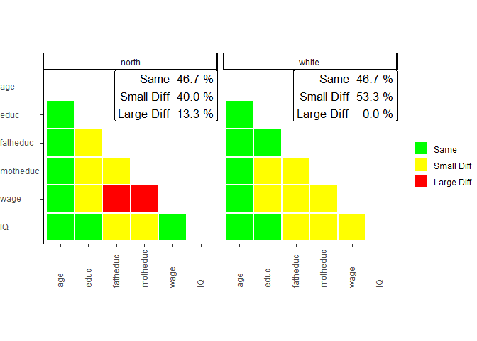

This is only a beta version of sampcompR. It is still in development and may contain bugs. If you use the package and a bug crosses your way, feel free to contact the Author (bjoern.rohr@gesis.org).
sampcompR
SampcompR aims to compare the similarity of one or more data frames with one or more benchmark data frames. This is done on a univariate, bivariate, and multivariate level. The main intention of the package was to compare surveys to benchmark surveys, although other comparisons are also viable. (e.g., mode-comparisons)
On the univariate level, the variables with the same name in data frames and benchmarks are compared using one of the different measures. Then a plot can be generated to visualize the differences and present a value indicating the overall difference of all variables (e.g., average difference, RMSE).
On the bivariate level, Pearson’s r values can be compared between the data frames and the benchmarks. The results of this comparison can also be visualized with a plot in the form of a heatmap.
Last, on the multivariate level, the package can compare and visualize multivariate regression models between the data frames and the benchmarks.
Installation
You can install the development version of sampcompR like so:
### Install the dependencies
install.packages("devtools")
# install.packages(c("boot", boot.pval, "data.table", "dplyr", "ggplot2", "Hmisc", "jtools","lmtest", "magrittr", "margins", "parallel", "psych", "reshape2", "readr", "svrep", "sandwich", "stats", "survey", "tidyselect", "utils","weights", "wooldridge"))
### Install the package
devtools::install_github("BjoernRohr/sampcompR")
library(sampcompR)Example
Prepare the Data
When using the package, the first step is to load your data. It is essential that the variables of comparison in the data frames and respective benchmark data frames need to be named the same. Additionally, it is best to try to measure the same constructs similarly. For example, if you want to compare two surveys, it is best if the same questions were used in the respective surveys for the variables of comparison.
In our example, we will use the card data frame from the wooldrige package as a base and split it into different sub-data frames. To keep our examples simple, we will not use design weights, although design weights can make a huge difference.
# install and load some additional packages for this readme
#install.packages("wooldridge","magrittr","knitr","kableExtra")
library(wooldridge)
library(magrittr)
library(knitr)
library(kableExtra)
card<-wooldridge::card
# we recode the married variable to a dummy, idicating of the respondents are married or not, which will be needed later.
card$married[card$married!=1]<-0
south<-card[card$south==1,] # only respondets that lived in the south
north<-card[card$south==0,] # only respondets that lived in the north
black<-card[card$black==1,] # only black respondets.
white<-card[card$black==0,] # only white respondets.
### install some other Splitting the data frame into subgroups allows us to compare if the subgroups differ, for example, if the respondents living in the North are different from those living in the South or if black respondents are different from white. This could be useful, for example, as a robustness check, if we fear that the estimates we found in our study based on the whole data frame might differ for specific sub-groups.
Univariate Comparison
Now that we have data frames we want to compare that are gathered similarly, we will start with a univariate comparison.
library(sampcompR)
univar_data<-sampcompR::uni_compare(dfs = c("north","black"),
benchmarks = c("south","white"),
variables=c("age","educ","fatheduc",
"motheduc","wage","IQ"),
funct = "rel_mean",
nboots=0,
summetric="avg2",
data=T,type = "comparison")
sampcompR::plot_uni_compare(univar_data)
Here we can see a plot showing the difference in mean for several variables (indicated in the variables parameter) in the data frames. The first data frame, named as a character in dfs, is compared to the first data frame in benchmarks, while the second is compared to the second, and so forth. Another important parameter is nboots. It indicates the number of bootstraps to calculate the confidence intervals. We recommend using at least 2000 to 10000 bootstraps, although this may take a while. It is also possible to set nboots==0, as we did in this example. In this case, the confidence intervals will be calculated analytically. The upper right corner of the plot shows the average relative difference in mean, which is chosen by using summetric=="avg2". Last, the parameter data indicates if the function should return a uni_compare_object which can be used in other package functions (e.g., plot_uni_compare).
Also, the difference can be shown in a table that can be helpful to document the results. We can easily get a good result table by adding the resulting table to other functions (e.g., the kable() function in RMarkdown).
uni_output_table<-sampcompR::uni_compare_table(univar_data)Table 1
| Variables | north | black |
|---|---|---|
| age | 0.006 | -0.012 |
| (>0.000, 0.011) | (-0.020, -0.004) | |
| educ | 0.087 | -0.125 |
| (0.078, 0.096) | (-0.139, -0.111) | |
| fatheduc | 0.186 | -0.304 |
| (0.168, 0.205) | (-0.341, -0.267) | |
| motheduc | 0.149 | -0.230 |
| (0.135, 0.163) | (-0.256, -0.204) | |
| wage | 0.276 | -0.273 |
| (0.251, 0.301) | (-0.296, -0.250) | |
| IQ | 0.065 | -0.177 |
| (0.057, 0.073) | (-0.193, -0.161) | |
| Average Error | 0.128 | 0.187 |
| RANK | 1 | 2 |
| N | 1358 - 1795 | 297 - 703 |
Difference in Relative Means off different Survey Groups
The table displays the difference between dfs and benchmarks for all variables, the confidence intervals, and the summary metric specified when creating the uni_compare_object for every comparison.
Bivariate Comparison
As with the univariate comparison, we start with a general function to calculate the bivariate difference between the data frames and plot the results.
biv_data<-sampcompR::biv_compare(dfs = c("north","black"),
benchmarks = c("south","white"),
variables= c("age","educ","fatheduc",
"motheduc","wage","IQ"),
data=T, corrtype = "rho",
weight = "weight",
id="id")
#>
#> Attache Paket: 'purrr'
#> Das folgende Objekt ist maskiert 'package:magrittr':
#>
#> set_names
#> survey 1 of 2 is compared
#> survey 2 of 2 is compared
sampcompR::plot_biv_compare(biv_data)
In this comparison, the Pearson’s r correlations of all variables indicated in the variables parameter are compared between the data frames and benchmarks. The plotted heatmap shows the difference in three categories. A correlation is green (Same) for one of two reasons. On the one hand, it can be that the Pearson’s r correlation of this variable pair is not significant in the data frame and in the benchmark. On the other hand, it can be that both z standardized Pearson’s r values are not significantly different. If neither of these conditions is true, the plot’s correlations are marked yellow (Small Diff) or red (Large Diff). To be red, it must also fulfill one of two additional conditions. The Pearson’s r correlations could be of different directions (e.g., one is positive, while the other is negative). Second, it could be that one of them is double the size of the other.
In our example, we can see on the left that the respondents living in the North are very different from those living in the South regarding the investigated bivariate correlations. Only 33.3% of all correlations are similar between both groups (Same) and would lead to similar interpretations measured with either group of the survey. 46,7% of correlations show minor differences (Small Diff), meaning that similar interpretations may not be guaranteed, while 20% of the correlations are very different (Large Diff) between the groups. The right half of the plot shows the comparison between black and white respondents, where fewer differences are found.
As before, we can also take a closer look at the exact values by putting the biv_compare_object into the biv_compare_table function of our package.
# Difference correlation matrix of the first comparison
table_biv1<-sampcompR::biv_compare_table(biv_data,type = "diff",comparison_number=1) Table 2
| age | educ | fatheduc | motheduc | wage | IQ | |
|---|---|---|---|---|---|---|
| age | ||||||
| educ | 0.12** | |||||
| fatheduc | 0.00 | -0.11*** | ||||
| motheduc | -0.06 | -0.14*** | -0.09*** | |||
| wage | 0.12*** | -0.19*** | -0.16*** | -0.19*** | ||
| IQ | 0.04 | 0.00 | -0.15** | -0.12** | -0.08 |
Difference in Pearson’s r for the North/South Sample
Using type = diff gives us a matrix for the difference in Pearson’s r between the surveys, while comparison_number = 1 indicates that the table should be for the first comparison (between thenorth and the south sample). Here we can again see what correlations significantly differ between the surveys and to what extent. However, to know why the colors are as they are in the plot, we must also look at the individual correlation matrices for both surveys. Here we only look at the tables for comparing north versus south respondents as an example.
# North correlation matrix of the first comparison
table_biv2<-sampcompR::biv_compare_table(biv_data,type = "dfs",comparison_number=1)
# South correlation matrix of the first comparison
table_biv3<-sampcompR::biv_compare_table(biv_data,type = "benchmarks",comparison_number=1) Table 3
| age | educ | fatheduc | motheduc | wage | IQ | |
|---|---|---|---|---|---|---|
| age | ||||||
| educ | 0.04 | |||||
| fatheduc | -0.08** | 0.41*** | ||||
| motheduc | -0.08** | 0.36*** | 0.57*** | |||
| wage | 0.35*** | 0.19*** | 0.09*** | 0.08*** | ||
| IQ | -0.05 | 0.50*** | 0.26*** | 0.23*** | 0.13*** |
Pearson’s r correlation matrix for the North Sample
Table 4
| age | educ | fatheduc | motheduc | wage | IQ | |
|---|---|---|---|---|---|---|
| age | ||||||
| educ | -0.08** | |||||
| fatheduc | -0.09* | 0.52*** | ||||
| motheduc | -0.02 | 0.49*** | 0.66*** | |||
| wage | 0.23*** | 0.38*** | 0.25*** | 0.28*** | ||
| IQ | -0.09* | 0.51*** | 0.40*** | 0.35*** | 0.21*** |
Pearson’s r correlation matrix for the South Sample
This shows us the whole picture. Looking at the correlation between age and education, for example, we can see that the correlations in both surveys are small. Additionally, the correlation is positive and insignificant in the north group, while it is negative and significant in the south group. Here, in addition to the conditions for a slight difference, both conditions for a Large Diff are true. However, looking at the correlations between wage and the father’s education, as well as the mother’s education, we see that only the difference in size was the reason for the Large Diff category. Nonetheless, we would come to very different conclusions measuring those correlations for either group.
Multivariate Comparison
When you want to know how different certain data frames or sub-data frames are, it may also be interesting to see if those differences exist in multivariate comparisons. For this, the first step is to choose the multivariate models we want to compare. This function (multi_compare()) is restricted to any model commutable with glm() (without weighting) or svyglm() (when weights are provided). In this example, we want to see if there are differences between the groups when looking at the regression of age, father's education, mother's education, and IQ on wage and education.
After choosing independent and dependent variables, all information can be given into multi_compare(). For this comparison, three similar regression models are performed. One model with either survey and one model with the combined surveys, including an interaction variable that indicates what survey the respondents are from. After this, for every coefficient, a similar classification is used, as in the bivariate comparison:
# designate dependent variables
dependent_ols<-c("wage","educ")
# designate independent variables
independent<-c("age","fatheduc","motheduc","IQ")
# compare the north and south data frames
multi_data1_ols<-sampcompR::multi_compare(df=north,
bench=south,
independent = independent,
dependent = dependent_ols,
family = "ols")
#>
#> Difference in coeficients between sets of respondents
#>
#> wage educ
#> age -3.74e+00 -7.91e-02*
#> fatheduc -3.11e+00 -4.41e-02
#> motheduc 5.40e+00 4.34e-02
#> IQ 8.34e-01 -1.85e-02**
#>
#> Overall difference between north & south: 25% of coeficients are significant different
#> (*p<0.05 ; **p<0.005 ; ***p<0.001; for t-test robust standard errors are used)
#>
# compare the black and white data frames
multi_data2_ols<-sampcompR::multi_compare(df=black,
bench=white,
independent = independent,
dependent = dependent_ols,
family = "ols")
#>
#> Difference in coeficients between sets of respondents
#>
#> wage educ
#> age 1.27e+01 7.05e-02
#> fatheduc 4.91e-01 7.38e-02
#> motheduc 6.94e-01 -1.13e-01
#> IQ -5.40e-01 2.89e-02**
#>
#> Overall difference between black & white: 12.5% of coeficients are significant different
#> (*p<0.05 ; **p<0.005 ; ***p<0.001; for t-test robust standard errors are used)
#>
# plot the results
sampcompR::plot_multi_compare(c("multi_data1_ols","multi_data2_ols"),
plots_label=c("north","black"))
The plot looks very similar to that of the bivariate comparison, except that every row shows a coefficient while every column shows a model. Here the green color (Same) indicates that a coefficient is not significantly different in any of the models performed with the individual surveys or that the interaction effect in the model on the pooled data frames is not significant. Similarly, yellow (Small Diff) or red (Large Diff) indicates that the coefficient is significant in one of the base models, and the interaction effect is significant in the pooled models. If those conditions are true, it is red (Large Diff) if the coefficients differ in direction or one is the size of the other and yellow (Small Diff) otherwise.
As we can see here in those models, there are fewer differences than before in the bivariate comparison, especially in the models based on the comparison between the black and the white sub-data frames, at least for those models compared. Also, we can see that the differences on the wage variable we found in previous comparisons are not present in the multivariate model. However, even in multivariate regression, education seems more prone to group differences.
In addition to the models, we can answer with an ols regression, it would also be interesting to add a model estimating the effect of the coefficients on the probability of marriage. However, for this, we need a logit regression, which now follows.
# logit dependent variable
dependent_log<-c("married")
# compare the north and south data frames
multi_data1_log<-sampcompR::multi_compare(df=north,
bench=south,
independent = independent,
dependent = dependent_log,
family = "logit")
#>
#> Difference in coeficients between sets of respondents
#>
#> married
#> age 1.86e-02
#> fatheduc -1.00e-02
#> motheduc 2.17e-02
#> IQ 1.07e-03
#>
#> Overall difference between north & south: 0% of coeficients are significant different
#> (*p<0.05 ; **p<0.005 ; ***p<0.001; for t-test robust standard errors are used)
#>
# compare the black and white data frames
multi_data2_log<-sampcompR::multi_compare(df=black,
bench=white,
independent = independent,
dependent = dependent_log,
family = "logit")
#>
#> Difference in coeficients between sets of respondents
#>
#> married
#> age 3.54e-02
#> fatheduc -8.37e-02
#> motheduc 1.99e-01*
#> IQ -4.24e-03
#>
#> Overall difference between black & white: 25% of coeficients are significant different
#> (*p<0.05 ; **p<0.005 ; ***p<0.001; for t-test robust standard errors are used)
#>
# merge those multi_compare_objects to the ols based objects
final_multi1<-sampcompR::multi_compare_merge(multi_data1_ols,multi_data1_log)
final_multi2<-sampcompR::multi_compare_merge(multi_data2_ols,multi_data2_log)
# plot the models together
sampcompR::plot_multi_compare(c("final_multi1","final_multi2"),
plots_label=c("north","black"))
After performing the same comparison with the method = logit, and with the new dependent variable, it would still be interesting to plot all models together. This can be done with the function multi_compare_merge, which adds multi_compare_objects together and use the newly created objects for the plot. This shows us that in addition to the education model, in the marriage model, one coefficient is different for black respondents than for white respondents.
We also add the objects into the provided table function to look at the differences closer.
### difference table
multi_table1 <- sampcompR::multi_compare_table(c("final_multi1","final_multi2"),type="diff")
multi_table2 <-sampcompR::multi_compare_table(c("final_multi1","final_multi2"),type="dfs")
multi_table3 <-sampcompR::multi_compare_table(c("final_multi1","final_multi2"),type="benchmarks")Table 5
| data_frames | variables | wage | educ | married |
|---|---|---|---|---|
| north | age | -3.740 | -0.079* | 0.019 |
| (4.455) | (0.034) | (0.048) | ||
| fatheduc | -3.110 | -0.044 | -0.010 | |
| (4.582) | (0.035) | (0.045) | ||
| motheduc | 5.400 | 0.043 | 0.022 | |
| (5.376) | (0.041) | (0.054) | ||
| IQ | 0.834 | -0.019** | 0.001 | |
| (0.911) | (0.007) | (0.009) | ||
| black | age | 12.700 | 0.070 | 0.035 |
| (7.095) | (0.054) | (0.069) | ||
| fatheduc | 0.491 | 0.074 | -0.084 | |
| (7.236) | (0.055) | (0.067) | ||
| motheduc | 0.694 | -0.113 | 0.199* | |
| (7.937) | (0.06) | (0.08) | ||
| IQ | -0.540 | 0.029** | -0.004 | |
| (1.423) | (0.011) | (0.013) |
Multivariate Comparison of Subgroups of the Card Sample : Interaction Models
Table 6
| data_frames | variables | wage | educ | married |
|---|---|---|---|---|
| north | age | 33.600*** | 0.099*** | 0.168*** |
| (2.539) | (0.019) | (0.026) | ||
| fatheduc | 5.620 | 0.156*** | -0.016 | |
| (2.949) | (0.022) | (0.028) | ||
| motheduc | 2.810 | 0.085** | -0.066 | |
| (3.518) | (0.026) | (0.034) | ||
| IQ | 2.050*** | 0.068*** | -0.002 | |
| (0.545) | (0.004) | (0.005) | ||
| black | age | 21.000*** | 0.016 | 0.139* |
| (5.425) | (0.054) | (0.065) | ||
| fatheduc | 4.710 | 0.073 | 0.049 | |
| (5.49) | (0.054) | (0.063) | ||
| motheduc | 4.260 | 0.200*** | -0.231** | |
| (5.952) | (0.059) | (0.075) | ||
| IQ | 2.710* | 0.041*** | -0.004 | |
| (1.075) | (0.011) | (0.012) |
Multivariate Comparison of Subgroups of the Card Sample : North and Black Sample Models
Table 7
| data_frames | variables | wage | educ | married |
|---|---|---|---|---|
| south | age | 29.800*** | 0.020 | 0.186*** |
| (4.008) | (0.029) | (0.044) | ||
| fatheduc | 2.520 | 0.112*** | -0.026 | |
| (3.598) | (0.029) | (0.035) | ||
| motheduc | 8.210* | 0.129*** | -0.044 | |
| (3.642) | (0.033) | (0.041) | ||
| IQ | 2.880*** | 0.050*** | -0.001 | |
| (0.712) | (0.006) | (0.008) | ||
| white | age | 33.700*** | 0.087*** | 0.174*** |
| (2.507) | (0.017) | (0.024) | ||
| fatheduc | 5.200* | 0.147*** | -0.035 | |
| (2.45) | (0.019) | (0.022) | ||
| motheduc | 4.950 | 0.088*** | -0.032 | |
| (3.044) | (0.023) | (0.029) | ||
| IQ | 2.170*** | 0.070*** | -0.009 | |
| (0.516) | (0.004) | (0.005) |
Multivariate Comparison of Subgroups of the Card Sample : South and White Sample Models
Now looking, for example, at the motheduc coefficient in the second comparison, we can see that there is a significant negative effect of the mother’s education getting married. At the same time, there is no significant effect for white respondents. This means that a model based on the whole sample could lead to wrong conclusions for this coefficient. On the other hand father’s education seems to have a similar effect on both groups.
Overall the comparison shows differences between the sub-groups in some cases. Suppose those cases play a role in the overall analyses of a research project. Splitting the data and reporting different results depending on the group could make sense in that case. On the other hand, if we only want to look at the wage model, there seem to be fewer differences in our example, and splitting the data frame into different groups might be unnecessary.
Further Use-Cases
As we have shown, the package can be handy in finding differences between groups, which could come in handy, for example, as robustness checks in a research paper. However, group comparisons are only one possible use case. Other examples could be comparing survey respondents to non-respondents (e.g., by comparing information known in the sample frame in probability surveys) or comparing two survey modes when a sample was gathered using differing modes.
In a preprint (Rohr et al., 2023), we used the package (which was created and designed in this context) to compare several non-probability and probability surveys against a benchmark survey.
Components of the package
In general, the package’s functions can be ordered into one of four categories. When using the functions of the package, it also makes sense to take a look into the help section, as most include optional parameters, for example, to weight the data or include a p_value adjustment (e.g., a Bonferroni adjustment) to adjust for the problem of multiple comparisons.
Univariate Comparison Functions
uni_compare()can be used to make a univariate comparison and get an object usable in the other univariate comparison functions or plot the results directly.plot_uni_compare()can be used to plot the results of theuni_compare()function.uni_compare_table()can be used to get a table for the results of theuni_compare()function.R_indicatorcalculates the R-Indicator of a Survey.
Bivariate Comparison Functions
biv_compare()can be used to make a bivariate comparison and get an object usable in the other bivariate comparison functions or plot the results directly.plot_biv_compare()can be used to plot the results of thebiv_compare()function.biv_compare_table()can be used to get a table for the results of thebiv_compare()function.
Multivariate Comparison Functions
multi_compare()can be used to make a multivariate comparison and get an object usable in the other bivariate comparison functions or plot the results directly. It is suitable to compare any glm() model between the data frame and the benchmarkplot_multi_compare()can be used to plot the results of themulti_compare()function.multi_compare_table()can be used to get a table for the results of themulti_compare()function.
Miscellaneous Functions
dataequalizer()can be used to reduce one data frame to only columns named similarly in another data frame and a list of variables given to the function.descriptive_tablecan be used to get a descriptive table for a dataset, including weighting.
References
Rohr, B., Silber, H., Felderer, B. (2024), “Comparing the accuracy of univariate, bivariate, and multivariate estimates across probability and non-probability surveys with populations benchmarks”, SocArXiv, Available at https://doi.org/10.31235/osf.io/n6ehf